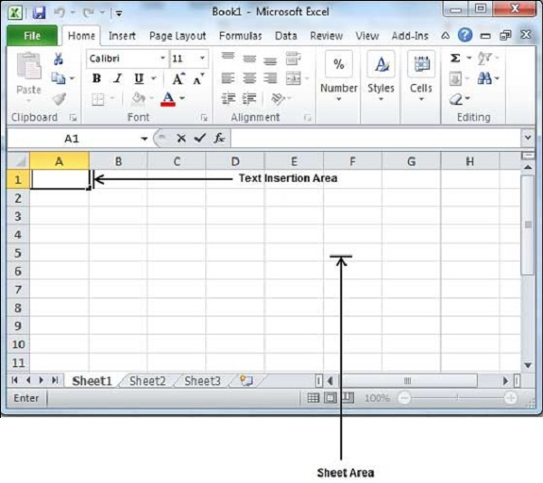
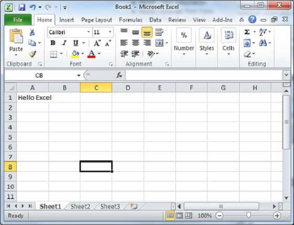

Entering values in excel sheet is a child’s play and this chapter shows how to enter values in an excel sheet. A new sheet is displayed by default when you open an excel sheet as shown in the below screen shot.

Sheet area is the place where you type your text. The flashing vertical bar is called the insertion point and it represents the location where text will appear when you type. When you click on a box then the box is highlighted. When you double click the box, the flashing vertical bar appears and you can start entering your data.
So, just keep your mouse cursor at the text insertion point and start typing whatever text you would like to type. We have typed only two words "Hello Excel" as shown below. The text appears to the left of the insertion point as you type.

There are following three important points, which would help you while typing −